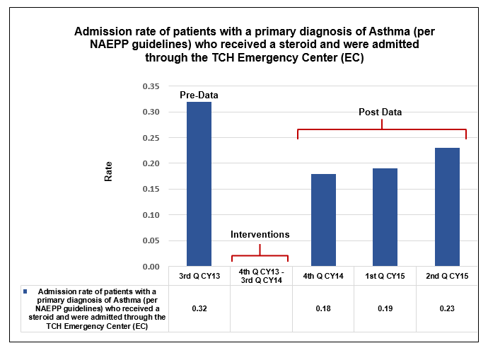

SE1EO
Professional Development SE1EO
Clinical nurses are involved in interprofessional decision-making groups at the organizational level. (Examples include, but are not limited to, organizational quality councils, budget review committees, equipment selection committees, mortality and morbidity committees, pharmacy and therapeutics committees, blood utilization committees, safety committees, and bioethics committees.)
-
Provide two examples, with supporting evidence, of improvements resulting from the contributions of clinical nurses in interprofessional decision-making groups at the organizational level. Supporting evidence must be submitted in the form of a graph with a data table that clearly displays the data.
SE1EOb
Appraisers Feedback:
A goal that states an improvement resulting from the contributions of clinical nurses in inter-professional decision-making groups at the organizational level. Note: The goal of the work of the ACPT was presented as an outcome of an increase in the percentage of eligible patients in compliance with the NEAPP guidelines instead of a rate. The goal reflects a process improvement and not a patient outcome. Provide a goal that represents an outcome of the process/compliance metric.
The evidence (data) that supports improvements resulting from the contributions of clinical nurses in inter-professional decision-making groups at the organizational level. Note: The data of the work of the ACPT was presented as an outcome of an increase in the percentage of eligible patients in compliance with the NEAPP guidelines instead of a rate. The data reflects a process improvement and not a patient outcome. Provide the outcome data of the process/compliance metric.
Texas Children's Hospital Notes:
Please see below the revised submission for SE1EOb with the goal and data that represents a patient outcome, derived from an improvement resulting from the contributions of clinical nurses in inter-profession decision-making groups at the organizational level. Additional Documentation and data provided - highlighted in yellow.
Example Two: Asthma Care Process – Quality Improvement
Background/Problem
In 2013, Texas Children's Hospital (TCH) identified disease processes such as asthma and appendicitis that were part of the clinical systems integration (CSI) strategy to drive improvement. These identified disease processes were costly, and there were large numbers of cases and significant variations in practice throughout the hospital system. The TCH Evidence-Based Outcomes Center (EBOC) initially began working on this Asthma CSI initiative in 2013. Since outcomes were subpar, based on the National Asthma Education and Prevention Program (NAEPP) guidelines, EBOC partnered with the Asthma Care Process Team to bring about improvement and increase compliance with the NAEPP guidelines.
Despite the evidence-based NAEPP guidelines, nearly 60% of patients with an asthma exacerbation received chest X-rays, and only 54% of asthmatics received an Asthma Action Plan (AAP). In addition, NAEPP guidelines recommend that an asthma patient who has not received a steroid at home within six hours prior to arrival to the emergency department should receive a steroid within 60 minutes of triage. The Asthma Care Process Team reviewed data for the third quarter calendar year 2013 and determined the admission rate of patients with a primary diagnosis of asthma (per NAEPP guidelines) who received a steroid and were admitted through the TCH Emergency Center (EC) was 0.32.
It is widely recognized there are seasonal variations associated with asthma exacerbations, with its highest incidences during the winter and spring months. There are several different triggers that may exacerbate asthma by different atmospheric environmental factors from homes, schools, or workplaces. Majority of children who have asthma exacerbations coincide with respiratory viral infections, influenza, and pneumonia. Most respiratory viruses and allergens appear in seasonal patterns and cycles and may differ in forms in adults.
Goal Statement
Decrease the admission rate of patients with a primary diagnosis of asthma (per NAEPP guidelines) who received a steroid and were admitted through the TCH Emergency Center (EC). The rate is calculated by the number of emergency center patients with a primary diagnosis of asthma (per NAEPP guidelines) who received a steroid and were admitted through the TCH Emergency Center (EC) per month divided by the total number of emergency center patients with a diagnosis of asthma per month.
Description of the Intervention/Initiative/Activities
The intervention period was from October 2013 to September 2014 (fourth quarter 2013–third quarter 2014)
October 2013–December 2013
Development of the Nurse-initiated Standing Delegation Order
The Asthma Care Process Team developed a nurse-initiated standing delegation order to expedite rapid steroid delivery to eligible patients. Amy Jeppesen, BSN, RN, Information Services, EPIC, in collaboration with the Asthma Care Process Team, modified the triage screen that serves as a trigger when an asthmatic patient who, per guidelines, is eligible for steroid administration within 60 minutes of triage presents to the Emergency Center.
Nurse Education about the Practice Change
In December 2013, Almea Montillo, BSN, RN, Patient Care Manager, Emergency Center, and Suzzette Wiener, BSN, RN, CPEN, Decentralized Education Coordinator, West Campus, conducted extensive education for clinical nurses, physicians, respiratory therapists and pharmacists on the asthma care changes and supporting evidence. In December 2013, the standing delegation order, revised order sets and best practice advisory were implemented.
Medication Administration Modification
The Emergency Center clinical nurses provided feedback to the Asthma Care Process Team that these patients were unable to swallow tablets. Multiple scenarios were developed through chart review, which prompted a change to using the intravenous formulation for oral administration. The Asthma Care Process Team also instituted pre-filled dexamethasone, which was stocked in the Emergency Center to reduce pharmacy preparation time.
January 2014–March 2014
Discharge Planning
As more than half the children seen in the Emergency Center for asthma exacerbation are discharged home, the Asthma Care Process Team undertook extensive planning for home medication compliance.
April 2014–June 2014
Montillo and Wiener performed frequent evaluations of processes. This led to a modification of the triage screening criteria for children with respiratory conditions, with continued communication to clinical nurses, physicians, respiratory therapists and pharmacists.
July 2014–September 2014
When the goal was not quickly achieved, the Asthma Care Process Team conducted frequent evaluations of the asthma patients admitted in the Emergency Center triage and the clinical nurses caring for these patients. Clinical nurses from the Asthma Care Process Team identified pharmacy delays as a barrier. Medication steroids were placed in the medication Omnicell in the Emergency Center at Main and West Campus. This interdisciplinary team collaborated to develop an Asthma order set, comprising National Asthma guidelines, in Epic. This helped to improve adherence, as all disciplines were able to view this order set when reviewing the patient’s chart.
Participants
Asthma Care Process Team
|
|||
Name |
Discipline |
Title/Role |
Department |
Monica Simmons, BSN, CPN |
Nursing |
Manager |
Pulmonary Adolescent Endocrine |
Ashley Simms, BSN, RN |
Nursing |
Manager |
7 South |
Almea Montillo, BSN, RN |
Nursing |
Manager |
Emergency Center |
Suzzette Weiner, BSN, RN, CPEN |
Nursing |
Decentralized Education Coordinator/ Clinical Nurse |
West Campus Emergency Center |
Elizabeth Brown, MSN, MHA, RN, OCN |
Nursing |
Director of Nursing |
Acute Care |
Terri Brown, MSN, RN, CPN |
Nursing |
Clinical Specialist/ Clinical Nurse |
Quality & Outcomes |
Susan Engleman, MSN, RN, CPNP, AC, PNP, BC |
Nursing |
Clinical Specialist/ Clinical Nurse |
Nursing Administration |
Kai Sanders |
Respiratory |
Asthma Educator |
Respiratory Care |
Julia Lawrence, MSHP, RRT-NPS |
Respiratory |
Respiratory Educator |
Respiratory Care |
Kimberly Davis, MS, RRT |
Respiratory |
Assistant Director |
Respiratory Care |
Amy Jeppesen, BSN, RN |
Nursing |
Technical Apps Advisor |
EPIC |
Julie McGuire, BSN, RN |
Nursing |
Assistant Director, Enterprise Systems |
EPIC |
William Rittenhouse, BS |
Information Services |
Senior Systems Analyst |
EPIC |
Jada Melancon |
Information Services |
Systems Analyst |
EPIC |
Erin McDade, PharmD, BCPPS |
Pharmacy |
Clinical Pharmacy Specialist |
Pharmacy |
Huay-Ying Lo, MD |
Medicine |
Physician |
Hospital Medicine |
Ricardo Quinonez, MD |
Medicine |
Physician |
Hospital Medicine |
Mona McPherson, MD |
Medicine |
Physician |
Pediatric ICU Services |
Amy Arrington, MD |
Medicine |
Physician |
Pediatric ICU Services |
Curtis Kennedy, MD |
Medicine |
Physician |
Pediatric ICU Services |
Esther Sampayo, MD |
Medicine |
Physician |
Emergency Medicine |
Charles Macias, MD |
Medicine |
Physician |
Emergency Medicine |
Robert Moore, MD |
Medicine |
Physician |
Pulmonary |
Benedetta McQueen, MS, MA, MPH |
Administration |
Project Manager |
Emergency Medicine |
Maxine Keller, RN |
Administration |
Clinical Data Specialist |
Clinical Outcomes & Data Support |
Cortney Thomsen |
Administration |
Quality Specialist |
Quality & Safety |
Jennifer Nichols |
Administration |
Research Specialist |
Evidence-Based Outcomes Center |
Stephen Gruschkus, PhD |
Administration |
Outcomes Analyst |
Quality & Safety |
Haijun Wang, PhD |
Administration |
Outcomes Analyst |
Quality & Safety |
Erin Davies, BSN, RN, CCRN |
Administration |
Business Systems Analyst |
Quality & Safety |
Ron Greene, MPH |
Administration |
Senior System Analyst |
Information Services |
SE1EO, Participants
Outcomes
Through nurses’ participation in the organizational-level, interprofessional decision-making Asthma Care Process Team, the admission rate of patients with a primary diagnosis of asthma (per NAEPP guidelines) who received a steroid and were admitted through the TCH Emergency Center (EC) decreased from 0.32 in third quarter CY 2013 to 0.18 in fourth quarter CY 2014, 0.19 in first quarter CY 2015 and 0.23 in second quarter CY 2015. With the considerations of the seasonal variations associated with asthma exacerbations, this is a significant decrease of admissions associated with the winter months.

Evidence SE1EOb-a, Admission rate of patients with a primary diagnosis of Asthma (per NAEPP guidelines) who received a steroid and were admitted through the TCH Emergency Center (EC)